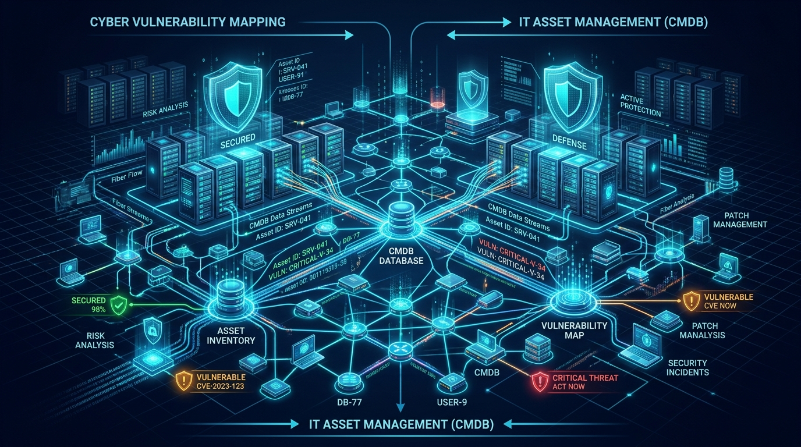

Lo que aprendí sobre gestión de activos: conocer la tecnología antes de intentar protegerla
Reflexión personal sobre el Módulo 1: Fundamentos de Gestión de Activos y su Relación con el Riesgo. De inventarios pasivos a la toma estratégica de decisiones basada en criticidad, dependencias CMDB y trazabilidad.

- 1. Introducción: De administrar sistemas a entender el riesgo
- 2. Primer aprendizaje: Un inventario debe servir para tomar decisiones
- 3. Proyecto Zero Day Coffee: Llevar la teoría a una empresa ficticia
- 4. Control de cambios: La rapidez también necesita disciplina
- 5. De la gestión de activos a la gestión de vulnerabilidades
- 6. Laboratorio HostedScan: Interpretar es tan importante como escanear
- 7. Cómo aplicaría estos aprendizajes en mi trabajo
- 8. Reflexión final: El activo más peligroso es el que nadie sabe que existe
- 9. Fuentes y Referencias Consultadas
1. Introducción: De administrar sistemas a entender el riesgo
En mi trabajo cotidiano como desarrollador e ingeniero enfocado en plataformas de comercio electrónico de alta demanda, estoy habituado a pensar en aplicaciones, integraciones API, bases de datos relacionales, microservicios y despliegues que deben operar con absoluta disponibilidad y velocidad. Con frecuencia, la inercia del día a día nos empuja a priorizar la extinción de incendios: resolver un fallo en pasarela de pago, liberar un parche urgente de checkout o mantener el rendimiento en picos de tráfico.
Sin embargo, cursar este primer módulo de la maestría me obligó a detenerme frente a una pregunta deceptivamente elemental: ¿cómo podemos proteger adecuadamente una infraestructura digital si no tenemos absoluta certeza de qué activos la componen, quién es el propietario responsable de cada uno y qué procesos neurálgicos del negocio dependen de su funcionamiento?
Mi principal conclusión y aprendizaje fue que la gestión de activos no debe degradarse jamás a una simple lista de inventario o un archivo de Excel estático. Gestionar activos significa identificar formalmente componentes tecnológicos, clasificarlos según su criticidad para la continuidad de la operación, modelar sus interdependencias sistémicas, documentar configuraciones en líneas base auditables y erigir controles de cambio para que cada modificación no introduzca vulnerabilidades invisibles. Lo crucial no es saber qué existe físicamente, sino comprender el impacto real si un componente falla, cambia de forma inadvertida o resulta comprometido por un adversario.
A lo largo de estas semanas conecté los marcos teóricos de las lecturas (Hobbs, 2011; Boerger, 2021; Calder & Watkins, 2007) con el proyecto colaborativo Zero Day Coffee y la práctica técnica de escaneo de vulnerabilidades mediante HostedScan y Google Gruyere. Esta sinergia permitió unir la planeación estratégica, la administración de configuraciones y la evaluación técnica del riesgo.
2. Primer aprendizaje: Un inventario debe servir para tomar decisiones
Una de las ideas más reveladoras del módulo fue distinguir entre tener una lista de activos y disponer de un verdadero inventario operativo útil para la seguridad. Cualquier registro superficial puede listar nombres de servidores o direcciones IP; no obstante, esa información aislada es incapaz de sustentar una evaluación de riesgo sensata. Para que un activo sea accionable, debe enriquecerse obligatoriamente con metadatos contextuales:
- Propietario / Custodio: Identidad con nombre y cargo responsable del activo y de autorizar cambios sobre él.
- Ubicación y Entorno: Si reside en premisa, nube pública, privada, staging o producción.
- Función operativa y criticidad: Nivel de impacto si sufre degradación o secuestro.
- Línea base de configuración: Versión de software, parches instalados, puertos abiertos y endurecimiento (hardening) aplicado.
- Relaciones de dependencia: Qué bases de datos, APIs o procesos de negocio consumen su salida.
Este principio lo contrasté directamente con las lecturas asignadas en la semana 2: el capítulo 2 de Hobbs (2011) y los capítulos 3 y 7 de Boerger (2021). Más que memorizar taxonomías teóricas, mi interés radicó en contraponer el enfoque administrativo tradicional con la urgencia defensiva: un inventario desactualizado o ciego ante las dependencias no solo es inútil, sino activamente peligroso, pues engendra una falsa sensación de seguridad mientras deja servicios en la sombra (Shadow IT) o endpoints huérfanos a merced de atacantes.
Llevado a la realidad del comercio electrónico, esto es crítico: un checkout no opera en el vacío. Depende de servicios de tokenización bancaria, sistemas ERP de inventario en tiempo real, webhooks de mensajería y microservicios de analítica. Si uno de estos eslabones no está formalmente inventariado, será imposible programar su remediación preventiva o prever el impacto en cascada ante una contingencia. Un inventario no es un artefacto estático que se elabora para una auditoría; es una disciplina viva que cubre todo el ciclo de vida del activo.
3. Proyecto Zero Day Coffee: Llevar la teoría a una empresa ficticia
La experiencia práctica más formativa del módulo fue el desarrollo colaborativo del proyecto Zero Day Coffee, una propuesta completa de gestión de activos, configuración y control de cambios para una cadena de 11 sucursales de cafeterías en la Ciudad de México. El entorno simulaba la realidad de muchas empresas en expansión: terminales de punto de venta (POS), conectividad Wi-Fi para clientes y empleados, un ERP centralizado de inventarios y una aplicación móvil de lealtad. El diagnóstico inicial revelaba falta de control centralizado, configuraciones dispares por sucursal y cambios informales sin bitácora.
Mi responsabilidad individual se centró en la planificación estructural del programa: delimitar el alcance, establecer objetivos medibles, asignar roles y responsabilidades (RACI), formular la matriz de criticidad, normar el uso de líneas base, definir el procedimiento operativo de cambios y trazar el cronograma de ejecución a 16 semanas.
Clasificar por criticidad, no tratar todo igual
Establecimos tres niveles rigurosos de criticidad. La premisa fundamental fue que el valor de un activo para la seguridad no se mide por su costo financiero ni por lo sofisticado de su tecnología, sino por el impacto directo que su interrupción o compromiso genera en los ingresos, la reputación y la continuidad operativa del negocio.
| Nivel de Criticidad | Activos Involucrados | Impacto en el Negocio | Requerimientos de Control |
|---|---|---|---|
| Alta Criticidad | Terminales POS, Core Switches/Firewalls, Base de Datos ERP, API de Cobros | Paralización inmediata de ventas, fuga de datos de tarjetahabientes (PCI-DSS) o suspensión del negocio. | Líneas base estrictas, monitoreo continuo 24/7, cambios evaluados por CAB, EDR obligatorio. |
| Media Criticidad | Laptops administrativas, servidor de reportes, portales de gestión de empleados | Retraso en tareas administrativas secundarias; existen alternativas operativas de contingencia. | Actualizaciones programadas fuera de horario hábil, respaldo semanal, aprobación por jefatura. |
| Baja Criticidad | Tabletas de menú digital, pantallas informativas de precios, impresoras auxiliares | Impacto mínimo o estético; no interrumpe el flujo transaccional. | Configuración estándar, cambios delegados al soporte local con bitácora diferida. |
La línea base como fuente de verdad y evidencia forense
Un punto angular que diseñé fue el protocolo de líneas base de configuración (Configuration Baselines). En lugar de permitir ajustes ad-hoc en los dispositivos de red, modelamos referencias formales. Por ejemplo, para el firewall perimetral de la primera sucursal:
// Evolución auditable de configuración en CMDB
Activo: FW-CDMX01-001 (Firewall Perimetral Sucursal Del Valle)
Línea Base Inicial: LB-FW-1.0 (Hash SHA-256 verificado | Aprobado 01/Oct/2026)
Solicitud de Cambio: CHG-2026-084 (Apertura de puerto seguro para nueva terminal POS)
Línea Base Nueva: LB-FW-1.1 (Autorizado por CAB | Implementado 12/Oct/2026 con Rollback validado)Comprendí que la línea base no es solo una buena práctica técnica: es evidencia forense y resiliencia. Si se desata una falla o una intrusión tras un cambio, la línea base permite responder con certeza: ¿qué cambió exactamente?, ¿quién lo autorizó?, ¿cuál era la versión previa y cuál es el procedimiento de reversión comprobado?
Dependencias en la CMDB: el riesgo cruzado
Al mapear la base de datos de gestión de configuración (CMDB), quedó patente cómo un firewall no es un objeto aislado: sostiene el túnel VPN hacia el ERP y segmenta la red de las terminales POS de la red Wi-Fi de clientes. Si un ingeniero actualiza el firmware del firewall asumiendo que solo afectará el enrutamiento general, pero la actualización rompe la negociación TLS de los datáfonos, detiene la facturación completa de la sucursal. La CMDB responde qué depende de qué, transformando una alerta técnica en entendimiento del negocio.
El plan propuesto comprendió cuatro fases: Fase 1: Preparación y Gobernanza (Semanas 1–2), Fase 2: Inventario Físico/Lógico y CMDB con Snipe-IT (Semanas 3–6), Fase 3: Líneas Base y Piloto en 2 Sucursales (Semanas 7–10) y Fase 4: Despliegue General, Integración EDR y Monitoreo Continuo (Semanas 11–16). Ninguna herramienta resuelve la seguridad por sí misma; la tecnología solo rinde frutos cuando opera sobre procesos y responsabilidades claros.
4. Control de cambios: La rapidez también necesita disciplina
En el ecosistema tecnológico actual, permeado por filosofías ágiles y continuous delivery, suele existir una resistencia cultural hacia los procesos de control de cambios, tachándolos erróneamente de «burocracia que frena la innovación». Sin embargo, las lecciones aprendidas en incidentes de producción demuestran lo contrario: la mayoría de las interrupciones críticas y brechas de seguridad no derivan de ciberataques sofisticados de día cero, sino de cambios internos no evaluados, parches mal probados o desvíos silenciosos de configuración.
En la propuesta de Zero Day Coffee estructuramos tres categorías operativas de cambios para balancear agilidad y rigor:
- Cambios Estándar: Tareas recurrentes, de bajísimo riesgo y procedimiento preaprobado (ej. renovación de certificados TLS con script validado o actualización menor de antivirus). No requieren sesión del CAB; se ejecutan con bitácora automatizada.
- Cambios Normales: Modificaciones significativas (reglas de firewall, actualización del ERP, migración de bases de datos). Sometidos a evaluación de impacto, pruebas en entorno espejo, aprobación del Comité de Cambios (CAB) y calendarización en ventana de mantenimiento.
- Cambios de Emergencia: Activados ante caídas de servicio o mitigación de vulnerabilidades explotadas activamente. Requieren aprobación rápida de un subcomité de emergencia (ECAB), pero demandan documentación y auditoría post-mortem obligatoria dentro de las siguientes 24 horas.
"Un cambio exitoso no es aquel que se implementó rápido y no arrojó errores inmediatos en consola. Un cambio verdaderamente exitoso preserva la seguridad del ecosistema, garantiza la continuidad del servicio y deja evidencia trazable para quien deba auditarlo o mantenerlo mañana."
5. De la gestión de activos a la gestión de vulnerabilidades
Las semanas subsecuentes del módulo expandieron el horizonte hacia la gestión y explotación de vulnerabilidades, a través de las lecturas fundamentales de Calder & Watkins (2007) (caps. 6, 8–10), Haber & Hibbert (2018) (caps. 2, 5, 7) y Hughes & Robinson (2024) (caps. 2, 4–6, 12).
El aprendizaje clave que extraje de estas obras es que una vulnerabilidad técnica (CVE) carece de significado por sí sola si no se cruza contra el contexto del activo. La ecuación del riesgo no es binaria:
Riesgo = Impacto del Activo en el Negocio × Probabilidad de Explotación (Exposición / Vectores de Ataque)Un puntaje CVSS de 8.5 en un servidor web perimetral que almacena tokens bancarios exige una respuesta de emergencia inmediata; ese mismo puntaje en una máquina virtual de pruebas aislada en una VLAN sin acceso a Internet puede gestionarse dentro del ciclo regular de parches. Por ende, la gestión de vulnerabilidades no consiste en ejecutar ciegamente herramientas para generar reportes kilométricos que abrumen al equipo, sino en priorizar de forma quirúrgica dónde intervenir para reducir el mayor volumen de riesgo residual admisible para la organización.
6. Laboratorio HostedScan: Interpretar es tan importante como escanear
La oportunidad de ver esta teoría en acción ocurrió en la práctica de laboratorio utilizando la plataforma HostedScan Security sobre una instancia controlada y autorizada de Google Gruyere. Este ejercicio consistió en un análisis de seguridad dinámico pasivo (basado en el motor de OWASP ZAP), inspeccionando encabezados de respuesta HTTP, atributos de sesión y configuraciones de transporte.
El escaneo arrojó un total de 7 hallazgos de seguridad: 2 de severidad media y 5 de severidad baja, sin registrar alertas críticas o altas:
| Severidad | Hallazgo Identificado | Vulnerabilidad / Mecanismo | Impacto Real y Remediación |
|---|---|---|---|
| Medio | Ausencia de Content Security Policy (CSP) | Falta de cabecera Content-Security-Policy en el servidor web. |
Permite que scripts maliciosos inyectados por XSS descarguen recursos externos o exfiltren credenciales. Se soluciona definiendo orígenes autorizados para scripts y estilos. |
| Medio | Falta de protección contra Clickjacking | Omisión de cabecera X-Frame-Options o directiva frame-ancestors en CSP. |
Un atacante puede embeber la aplicación dentro de un <iframe> transparente y engañar a un usuario autenticado para realizar acciones involuntarias. Remediación con SAMEORIGIN o DENY. |
| Bajo | Cookie de sesión sin bandera HttpOnly |
Atributo de protección ausente en cookies sensibles. | El contenido de la cookie queda accesible para código JavaScript en el navegador, elevando el riesgo de robo de sesión mediante ataques de XSS. |
| Bajo | Cookie de sesión sin bandera Secure |
La cookie no restringe su transmisión exclusivamente a HTTPS. | Riesgo de intercepción de credenciales de sesión en texto claro si el tráfico transita por redes intermedias o Wi-Fi inseguro. |
| Bajo | Atributo SameSite no configurado |
Falta de restricción contextual en el envío de cookies. | Facilita vectores de ataque de Cross-Site Request Forgery (CSRF). Debe configurarse con Lax o Strict. |
| Bajo | Ausencia de X-Content-Type-Options |
Falta de directiva nosniff en respuestas HTTP. |
Los navegadores pueden interpretar erróneamente tipos MIME ejecutables como scripts, facilitando ataques de inyección MIME. |
| Bajo | HTTP Strict Transport Security (HSTS) omitido | Falta de cabecera Strict-Transport-Security. |
Permite ataques de degradación SSL/TLS (SSL-Stripping) en solicitudes iniciales HTTP. |
Una lectura ingenua de este reporte concluiría que el sistema está relativamente seguro porque «no hay alertas rojas ni críticas». Esa conclusión sería profundamente equivocada:
- Límites del escaneo pasivo: Un escaneo DAST pasivo solo observa las respuestas del servidor sin interactuar con la lógica interna, autenticación profunda o bases de datos; no garantiza la inexistencia de fallas graves en el backend.
- Efecto acumulativo de fallas bajas: La conjunción de cookies sin
HttpOnly/Secure, falta de HSTS y ausencia de CSP crea el escenario perfecto: un ataque XSS trivial se convierte inmediatamente en secuestro definitivo de sesión. - Automatización vs. Criterio Profesional: Las herramientas de escaneo aceleran la recolección de datos, pero el juicio del profesional de ciberseguridad es el único que puede interpretar la exposición real, descartar falsos positivos y fijar el plan de remediación en función del apetito de riesgo del negocio.
7. Cómo aplicaría estos aprendizajes en mi trabajo
La pertinencia de este módulo con mi desarrollo profesional en arquitectura y optimización de plataformas de comercio electrónico es absoluta. A partir de lo aprendido, estructuraría tres líneas de acción inmediata en mi labor técnica:
1. Inventario lógico de microservicios y dependencias API
Más allá del hardware o los servidores virtuales en la nube, implementaría un inventario exhaustivo de servicios lógicos: para cada microservicio en VTEX IO o middleware de sincronización con Azure SQL, registrar formalmente el propietario responsable, qué datos transaccionales procesa (PII, tarjetas, pedidos), su nivel de criticidad y las dependencias de red de las que se alimenta.
2. Trazabilidad rigurosa y endurecimiento de configuraciones
Establecer líneas base explícitas para encabezados HTTP de seguridad en el CDN y en los puntos de entrada del frontend (CSP restrictiva, HSTS con preloading, SameSite estricto), de modo que ninguna modificación de código en producción pueda degradar estas cabeceras sin generar una alerta inmediata en los pipelines CI/CD.
3. Métricas e indicadores de gobernanza técnica
Propondría tres KPIs medibles para evaluar la madurez de nuestros activos:
- % de activos críticos cubiertos por CMDB: Meta del 100% en componentes que tocan checkout, pasarelas y catálogos.
- Tiempo Medio de Remediación (MTTR) de vulnerabilidades en activos de alta criticidad: Establecer SLAs estrictos según severidad contextualizada.
- % de cambios en producción con evidencia de pruebas y plan de rollback: Cero despliegues sin trazabilidad auditada.
8. Reflexión final: El activo más peligroso es el que nadie sabe que existe
Al iniciar este módulo, mi concepción de la gestión de activos estaba sesgada hacia la noción administrativa de registrar equipos para inventarios contables. Hoy concluyo con una perspectiva radicalmente distinta: la gestión de activos es el cimiento insustituible sobre el que descansa toda la arquitectura de defensa cibernética.
No es factible calcular el riesgo de aquello que se desconoce; no es viable mitigar una vulnerabilidad en un servicio que carece de custodio; y es imposible investigar un incidente de seguridad si no existe una línea base previa contra la cual comparar los desvíos. La seguridad de la información no comienza ejecutando un escáner automatizado ni concluye aplicando un parche de emergencia: es una cultura permanente de visibilidad sistémica, disciplina en el cambio controlado y comprensión profunda del impacto tecnológico en la supervivencia del negocio.
9. Fuentes y Referencias Consultadas
- Hobbs, M. (2011). IT asset management: A pocket survival guide (Cap. 2). IT Governance Publishing. Recuperado de O'Reilly Learning
- Boerger, J. L. (2021). Rethinking information technology asset management (Caps. 3 y 7). Business Expert Press. Material académico del curso en Canvas, Tecnológico de Monterrey.
- Calder, A., & Watkins, S. (2007). Risk assessment for asset owners (Caps. 6, 8, 9 y 10). IT Governance Publishing. Recuperado de O'Reilly Learning
- Haber, M. J., & Hibbert, B. (2018). Asset attack vectors: Building effective vulnerability management strategies to protect organizations (Caps. 2, 5 y 7). Apress. https://doi.org/10.1007/978-1-4842-3628-4
- Hughes, C., & Robinson, N. (2024). Effective vulnerability management: Managing risk in the vulnerable digital ecosystem (Caps. 2, 4, 5, 6 y 12). Wiley. Recuperado de O'Reilly Learning
- Bauer, K. (2020, 12 de agosto). Find and attribute images from Flickr. Ken Bauer's Blog. Recuperado de https://blog.kenbauer.me/2020/08/12/attribution-assignment/
- Center for Internet Security (CIS). (2023). CIS Critical Security Controls (Controls 1 & 2: Inventory and Control of Enterprise and Software Assets). Recuperado de https://www.cisecurity.org/controls
- National Institute of Standards and Technology (NIST). (2024). Cybersecurity Framework (CSF) 2.0: Asset Management (ID.AM). U.S. Department of Commerce. Recuperado de https://www.nist.gov/cyberframework
- OWASP Foundation. (2021). OWASP Top 10:2021 — A05:2021-Security Misconfiguration. Recuperado de https://owasp.org/Top10/
- Google LLC. (2024). Google Gruyere: Web Application Exploits and Defenses. Recuperado de https://google-gruyere.appspot.com/
- HostedScan Security. (2024). HostedScan Documentation: Web Application Scanning & ZAP Integrations. Recuperado de https://docs.hostedscan.com/
- Equipo de Proyecto 23. (2026). Zero Day Coffee: Programa integral de gestión de activos, configuraciones y control de cambios. Proyecto colaborativo de la Maestría en Ciberseguridad, Tecnológico de Monterrey. Material interno del curso.